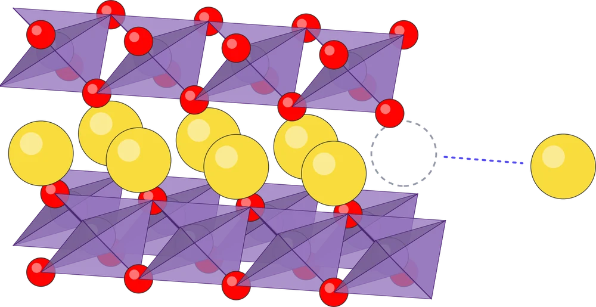

Seok Lab · 연구 노트와 개발 일지
연구하면서,
개발합니다.
배터리 재료를 원자 단위에서 계산하는 연구와, 중고 전기차 시세 도구 EValue·위스키 기록 앱 첫잔을 만드는 개발을 함께 합니다. 계산이 어긋난 날도 배포가 꼬인 날도 그날 나온 숫자 그대로 적어 둡니다.

Seok Lab · 연구 노트와 개발 일지
배터리 재료를 원자 단위에서 계산하는 연구와, 중고 전기차 시세 도구 EValue·위스키 기록 앱 첫잔을 만드는 개발을 함께 합니다. 계산이 어긋난 날도 배포가 꼬인 날도 그날 나온 숫자 그대로 적어 둡니다.
